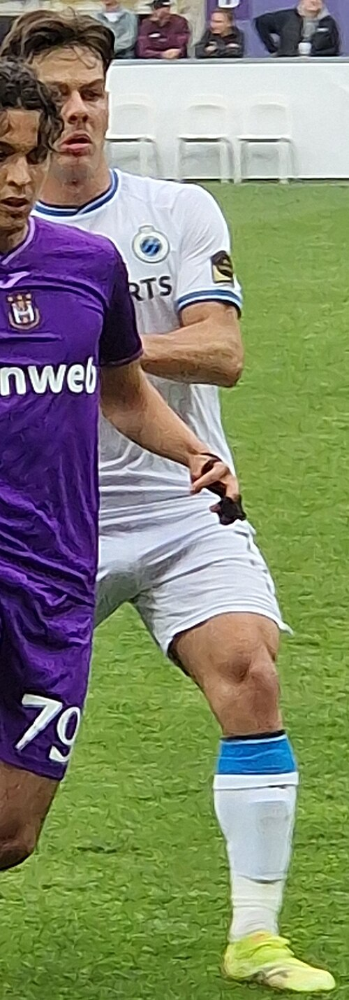
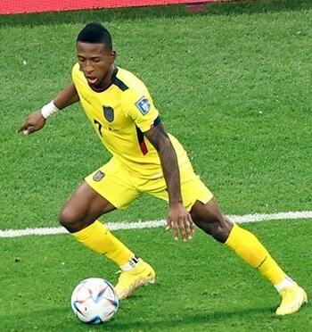
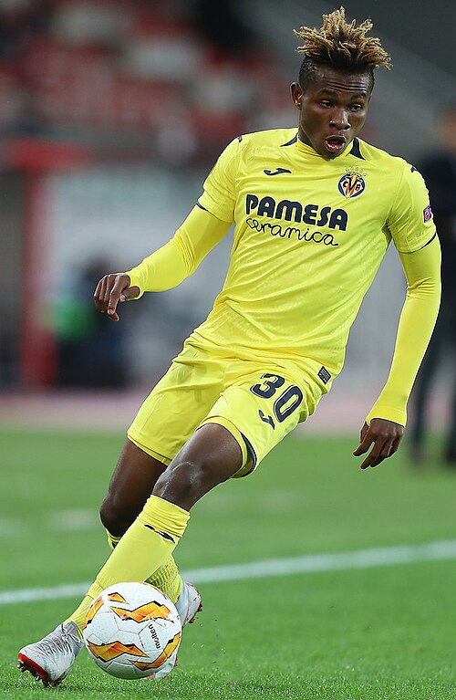
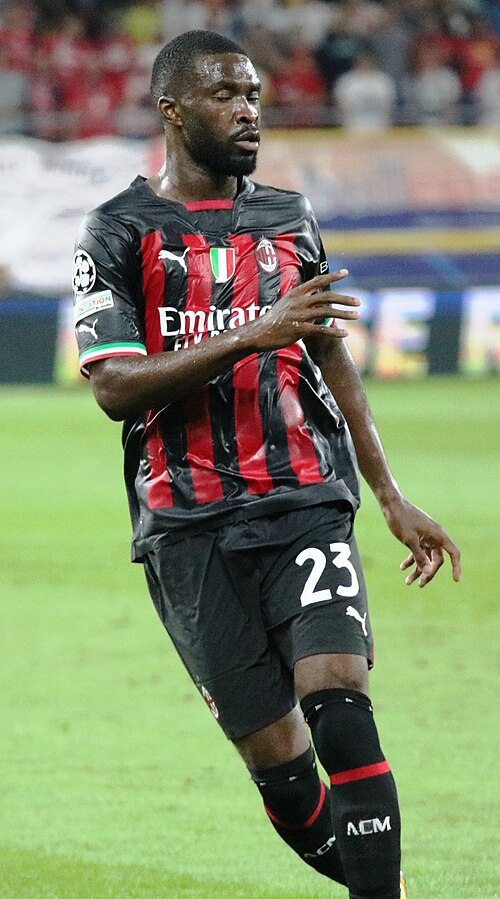

AC Milan Portfolio
Current roster, squad value, top assets, U23 assets, honours, and market risk.
Squad Market Score81.1
Squad ARES Score83.0
Average Age26.0
Transfer RiskLow

AC Milan
Serie A | Italy | Europe
Top AssetYunus Musah
U23 Assets9
Honours Rows13
ConfidenceHigh
Roster source: AC Milan | Checked 2026-05-24
Market Score vs Age
Squad portfolio shape by age and market score.
X-axis: Player ageY-axis: Market Score
ARESMarketTrendConfidence
How to read: Each point shows how squad age relates to market value.
Position Strength
GK, CB, FB, CM, W, CF portfolio balance.
X-axis: Position groupY-axis: Squad strength
ARESMarketTrendConfidence
How to read: Bars compare strength across the main football position groups.
Current Player Roster
| Player | Age | Position | Minutes / Role | ARES | Market | Tier | Trend | Confidence |
|---|---|---|---|---|---|---|---|---|
 Yunus Musah Yunus Musah | 23 | FW | 1129 estimated minutes / Rotation / role player | 89.6 | 91.5 | Franchise Asset | Flat | High |
| Santiago Giménez | 25 | FW | 2989 estimated minutes / Projected starter | 89.2 | 91.3 | Franchise Asset | Falling | High |
| CFFBAC MilanClaudio Filippi | 21 | FB | 2023 estimated minutes / current squad | 68.5 | 90.3 | Rising Asset | Stable | Medium |
| Rafael Leão | 26 | FW | 1302 estimated minutes / Rotation / role player | 88.2 | 90.1 | Franchise Asset | Falling | High |
| Emerson Royal | 27 | DF | 1734 estimated minutes / Rotation / role player | 90.7 | 89.7 | Franchise Asset | Rising | High |
 Ardon Jashari | 23 | MF | 1233 estimated minutes / Rotation / role player | 87.2 | 86.7 | Blue-Chip Asset | Rising | High |
 Pervis Estupiñán | 28 | DF | 1987 estimated minutes / Projected starter | 88.0 | 86.6 | Blue-Chip Asset | Rising | High |
 Samuel Chukwueze | 27 | W | 2194 estimated minutes / Projected starter | 84.7 | 85.7 | Blue-Chip Asset | Falling | High |
 Fikayo Tomori | 28 | DF | 2843 estimated minutes / Projected starter | 86.9 | 85.4 | Blue-Chip Asset | Rising | High |
| Youssouf Fofana | 27 | MF | 2298 estimated minutes / Projected starter | 85.0 | 84.5 | Blue-Chip Asset | Flat | High |
| Luka Modrić | 40 | MF | 2753 estimated minutes / Projected starter | 88.1 | 83.4 | Blue-Chip Asset | Rising | High |
| SGFBAC MilanStefano Grani | 34 | FB | 831 estimated minutes / current squad | 73.2 | 83.1 | Core Starter | Rising | Medium |
| Suso | 32 | MF | 2590 estimated minutes / Projected starter | 85.4 | 81.4 | Rising Asset | Falling | High |
| Adrien Rabiot | 31 | MF | 891 estimated minutes / Rotation / role player | 83.4 | 81.2 | Rising Asset | Rising | High |
| ITFBAC MilanIgli Tare | 32 | FB | 2263 estimated minutes / current squad | 85.4 | 81.0 | Core Starter | Rising | Medium |
| RBFBAC MilanRoberto Bosco | 22 | FB | 2565 estimated minutes / current squad | 71.4 | 79.9 | Rising Asset | Stable | Medium |
| MLFBAC MilanMarco Luison | 25 | FB | 658 estimated minutes / current squad | 72.0 | 79.6 | Core Starter | Stable | Medium |
| MLFBAC MilanMarco Landucci | 25 | FB | 2367 estimated minutes / current squad | 76.0 | 78.4 | Core Starter | Rising | Medium |
| ARFBAC MilanAndrea Riboli | 21 | FB | 1046 estimated minutes / current squad | 81.6 | 77.6 | Rising Asset | Stable | Medium |
| SMFBAC MilanStefano Mazzoni | 27 | FB | 1207 estimated minutes / current squad | 83.2 | 76.1 | Core Starter | Rising | Medium |
| SBFBAC MilanSimone Bottitta | 19 | FB | 2997 estimated minutes / current squad | 81.7 | 75.1 | Rising Asset | Stable | Medium |
| VVFBAC MilanVincenzo Vergine | 20 | FB | 3091 estimated minutes / current squad | 81.9 | 74.4 | Rising Asset | Stable | Medium |
| GMFBAC MilanGeoffrey Moncada | 19 | FB | 970 estimated minutes / current squad | 89.5 | 72.1 | Rising Asset | Rising | Medium |
| MTFBAC MilanMaurizio Trombetta | 18 | FB | 2379 estimated minutes / current squad | 72.9 | 69.7 | Rising Asset | Stable | Medium |
| HAFBAC MilanHendrik Almstadt | 28 | FB | 1292 estimated minutes / current squad | 85.5 | 67.6 | Core Starter | Rising | Medium |
| MAFBAC MilanMassimiliano Allegri | 28 | FB | 2173 estimated minutes / current squad | 89.7 | 66.3 | Core Starter | Rising | Medium |
U23 Assets
| Player | Age | Position | Market | Reason |
|---|---|---|---|---|
| Yunus Musah | 23 | FW | 91.5 | Upside FW profile with Serie A context, 1129 beta-estimated minutes, and licensed Commons photo coverage. |
| CFFBAC MilanClaudio Filippi | 21 | FB | 90.3 | Current club roster row parsed from Wikipedia. |
| Ardon Jashari | 23 | MF | 86.7 | Upside MF profile with Serie A context, 1233 beta-estimated minutes, and licensed Commons photo coverage. |
| RBFBAC MilanRoberto Bosco | 22 | FB | 79.9 | Current club roster row parsed from Wikipedia. |
| ARFBAC MilanAndrea Riboli | 21 | FB | 77.6 | Current club roster row parsed from Wikipedia. |
| SBFBAC MilanSimone Bottitta | 19 | FB | 75.1 | Current club roster row parsed from Wikipedia. |
| VVFBAC MilanVincenzo Vergine | 20 | FB | 74.4 | Current club roster row parsed from Wikipedia. |
| GMFBAC MilanGeoffrey Moncada | 19 | FB | 72.1 | Current club roster row parsed from Wikipedia. |
| MTFBAC MilanMaurizio Trombetta | 18 | FB | 69.7 | Current club roster row parsed from Wikipedia. |
Club Honours And Trophies
| Competition | Type | Count | Years | Source |
|---|---|---|---|---|
| Type Competition Titles Seasons | Team honour | 1 | https://en.wikipedia.org/wiki/AC_Milan | |
| Domestic Serie A 19 1901 , 1906 , 1907 , 1950 | Team honour | 19 | 1901, 1906, 1907, 1950, 1954, 1956, 1958, 1961 | https://en.wikipedia.org/wiki/AC_Milan |
| Serie B 2 1980 | Team honour | 2 | 1980, 1982 | https://en.wikipedia.org/wiki/AC_Milan |
| Coppa Italia 5 1966 | Team honour | 5 | 1966, 1971, 1972, 1976, 2002 | https://en.wikipedia.org/wiki/AC_Milan |
| Supercoppa Italiana 8 1988 , 1992 , 1993 , 1994 , 2004 , 2011 , 2016 , 2024 | Team honour | 8 | 1988, 1992, 1993, 1994, 2004, 2011, 2016, 2024 | https://en.wikipedia.org/wiki/AC_Milan |
| Continental European Cup / UEFA Champions League 7 1962 | Team honour | 7 | 1962, 1968, 1988, 1989, 1993, 2002, 2006 | https://en.wikipedia.org/wiki/AC_Milan |
| European Cup Winners' Cup 2 1967 | Team honour | 2 | 1967, 1972 | https://en.wikipedia.org/wiki/AC_Milan |
| European Super Cup / UEFA Super Cup 5 1989 , 1990 , 1994 , 2003 , 2007 | Team honour | 5 | 1989, 1990, 1994, 2003, 2007 | https://en.wikipedia.org/wiki/AC_Milan |
| Latin Cup 2 s 1951 , 1956 | Team honour | 2 | 1951, 1956 | https://en.wikipedia.org/wiki/AC_Milan |
| Worldwide Intercontinental Cup 3 s 1969 , 1989 , 1990 | Team honour | 3 | 1969, 1989, 1990 | https://en.wikipedia.org/wiki/AC_Milan |
| FIFA Club World Cup 1 2007 | Team honour | 1 | 2007 | https://en.wikipedia.org/wiki/AC_Milan |
| record | Team honour | 1 | https://en.wikipedia.org/wiki/AC_Milan | |
| s shared record | Team honour | 1 | https://en.wikipedia.org/wiki/AC_Milan |
Transfer Needs
| Need | Position | Reason | Priority | Suggested Profile |
|---|---|---|---|---|
| Role security and U23 depth | Depth risk review | Squad portfolio balance uses ARES score, market score, age curve, and roster coverage. | Medium | Current roster players sorted by Market Score |